cave


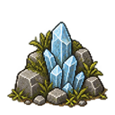
Twenty transparent props. Sprite samples below use a 48-pixel canvas; game placements use existing 42–49-pixel sizing. Click a scene to inspect the full-resolution game capture.



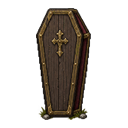
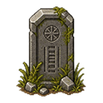


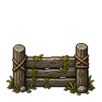
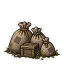


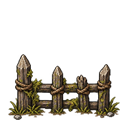


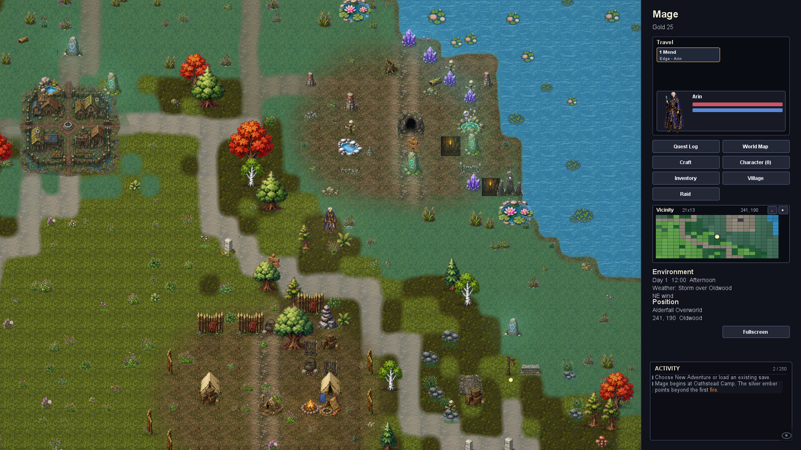
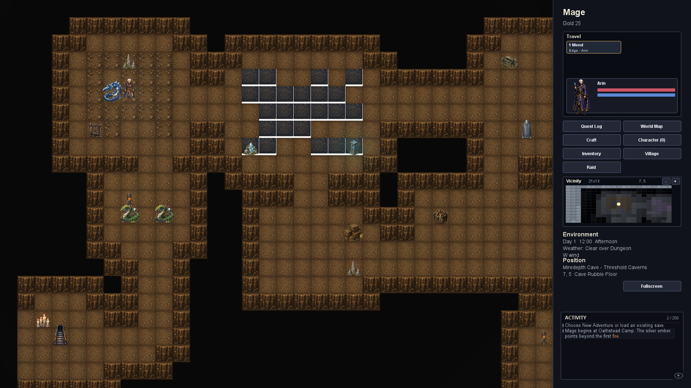
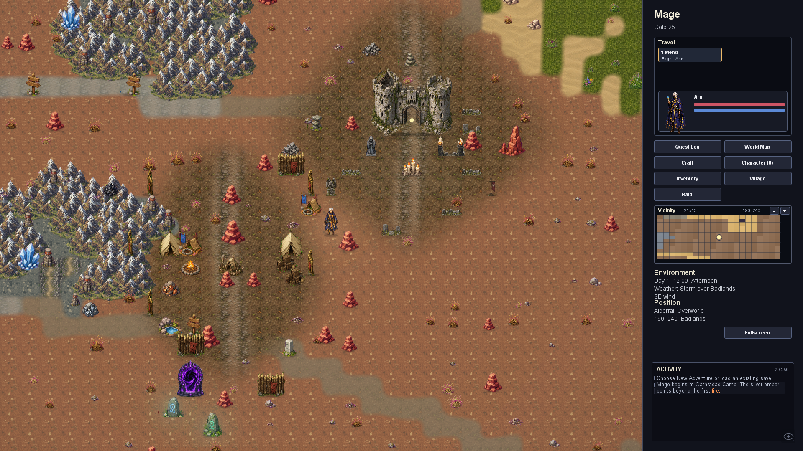
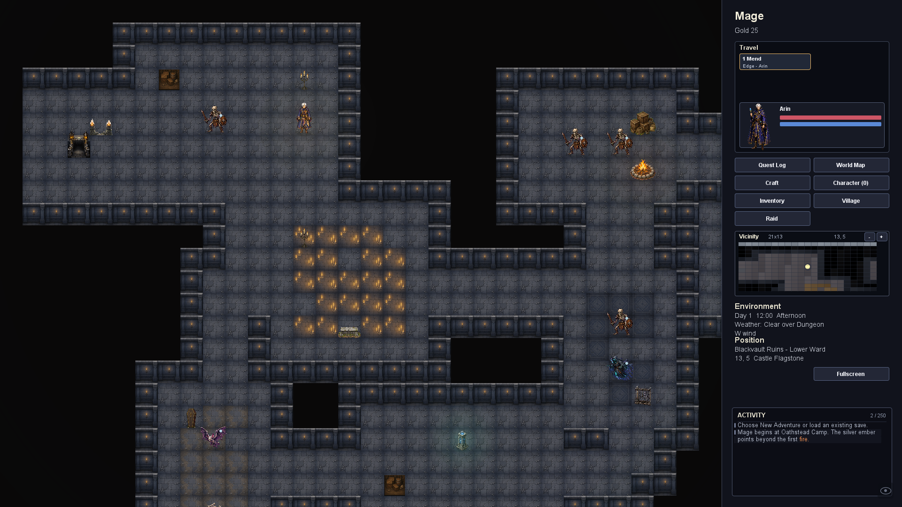
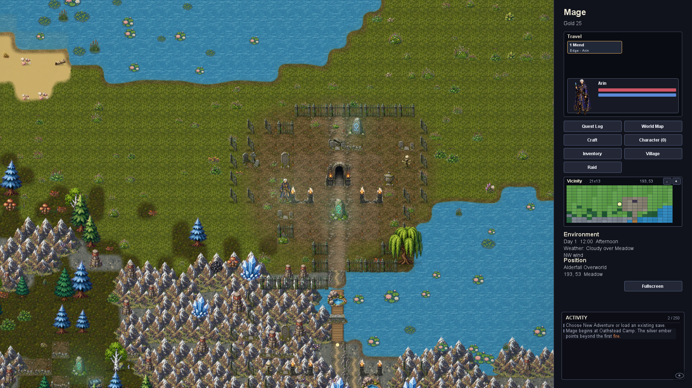
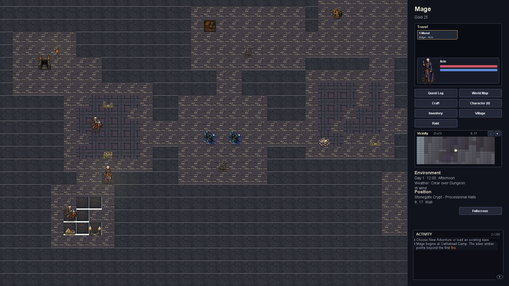
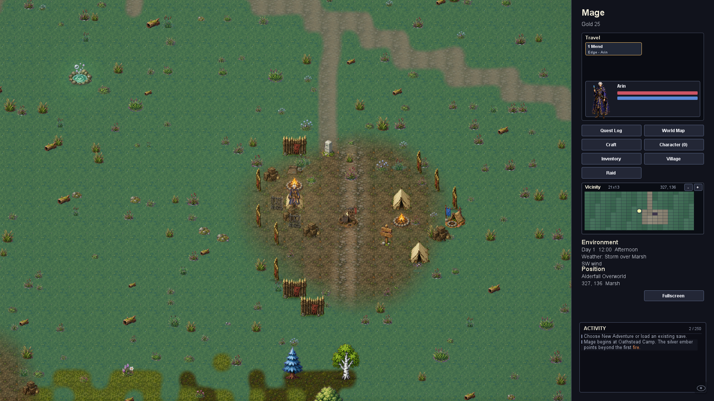
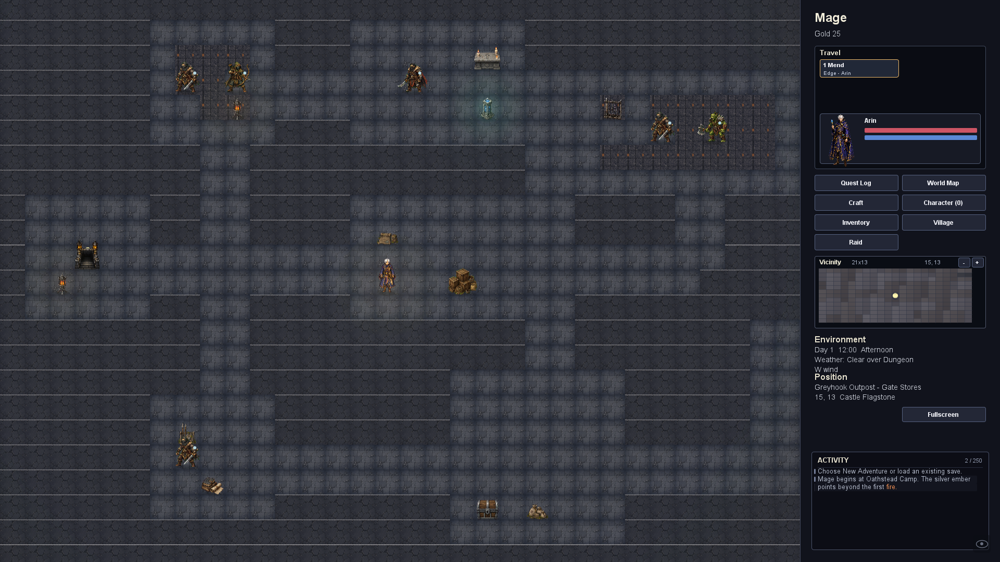
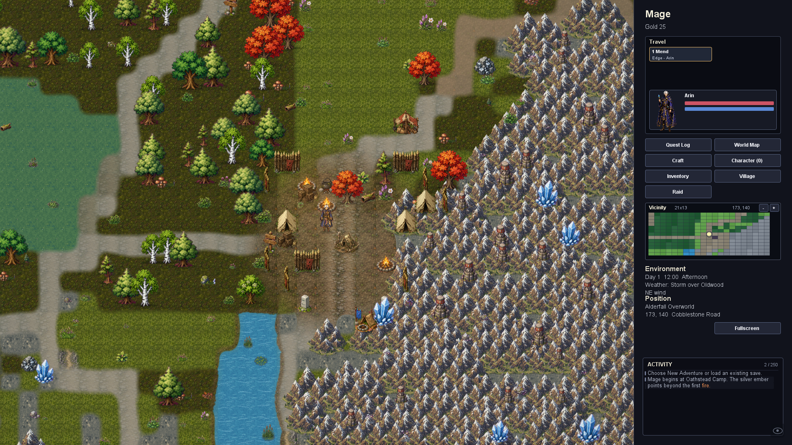
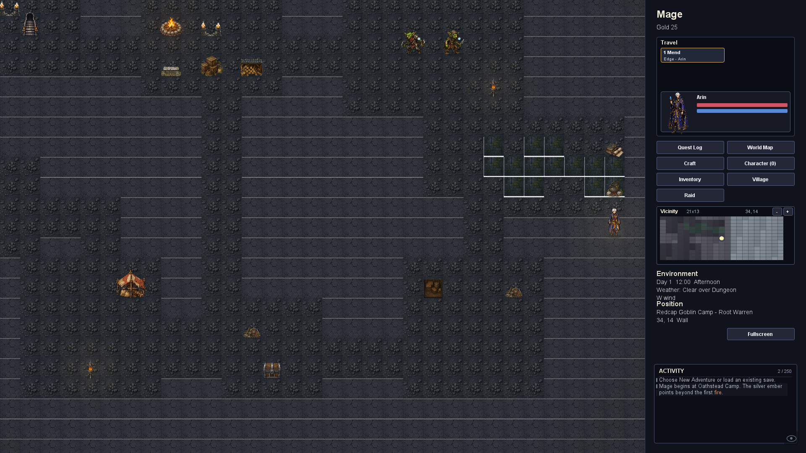